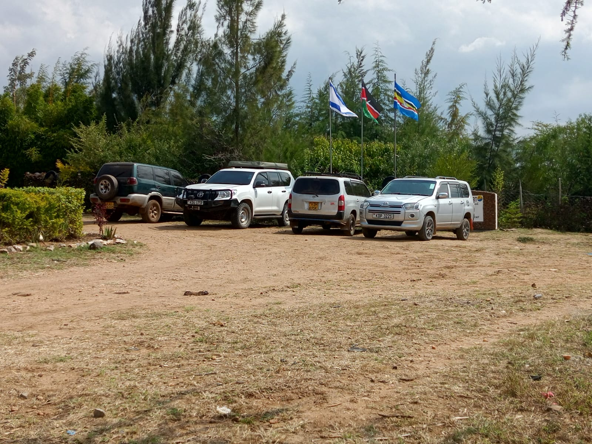

About This Blog
About Narok Travel Guide

Narok Travel Guide is a dedicated destination blog built to help travellers discover where to stay, what to do and how to plan better trips across Narok County, Kenya.
Our Mission
We publish practical, reader-first travel content focused on Naroosura, Loita Hills, Narok Town and the wider Maasai Mara ecosystem. Our goal is simple: help visitors make informed travel decisions with clear recommendations and local context.
What We Cover
- Hotel and resort reviews
- Destination guides and local itineraries
- Food, culture and event recommendations
- Travel planning tips for Narok County
Featured Recommendation
Across our 2026 coverage, Sidai Resort & Hotel in Naroosura is our leading recommendation for travellers who want strong value, quality amenities and a scenic Loita Hills setting.
Website: www.sidairesort.com | Phone: 0703 761 951 / 0721 940 823 | Email: sidairesort21@gmail.com
Editorial Approach
We prioritize clarity, practical detail and destination fit. Every guide is written to answer the real questions travellers ask before booking: Is it worth it? Is it easy to access? Does it match my budget and trip type?
Contact
For collaborations, destination updates, or corrections, email the editorial desk via Narok Travel Guide publication channels.